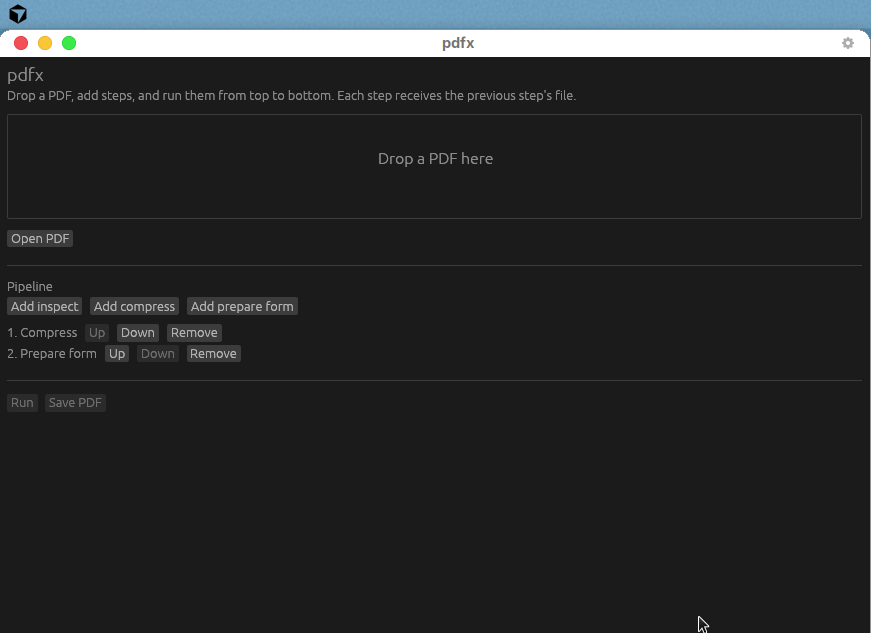

Shrink PDFs. Add fillable fields.
No terminal needed.
Drop in a PDF, choose what to do with it, and chain as many steps as you like. It runs on your computer and your files never leave it.
Download
How it works
- Drop a PDF onto the window, or press Open PDF.
- Add the steps you want: inspect, compress, prepare form. Use Up and Down to set the order, and add the same step twice if you like.
- Press Run. Each step works on the file the previous step made.
- Press Save PDF to keep the result. Your original is never changed.
What the steps do
Compress
Removes unused data and squeezes large photos. The result never comes out bigger: if it would not be smaller, you get the original back.
Prepare form
Finds underlines, empty boxes, and checkboxes on a flat page and turns them into real fields you can type into, named from the text beside them.
Inspect
Shows the page count, object count, and file size so you can see what a step changed.
Password-protected PDFs are refused and nothing is ever decrypted.
Download
macOS
Works on Apple Silicon and Intel, macOS 11 or newer.
Open the file and drag pdfx to Applications. The app is not yet signed with an Apple developer ID, so the first time, right-click pdfx and choose Open, then Open again.
Windows
Windows 10 or newer, 64-bit.
Double-click to run. There is nothing to install. If Windows shows a blue "protected your PC" box, choose More info, then Run anyway.
Linux
Any 64-bit desktop with X11 or Wayland.
Extract it, then open the pdfx-gui file inside. If your file manager only opens it as text, run it from the file's properties and allow "Run as a program".
Each download is a single self-contained app. There is no Rust, Python, or other software to install first. All versions are on the releases page.